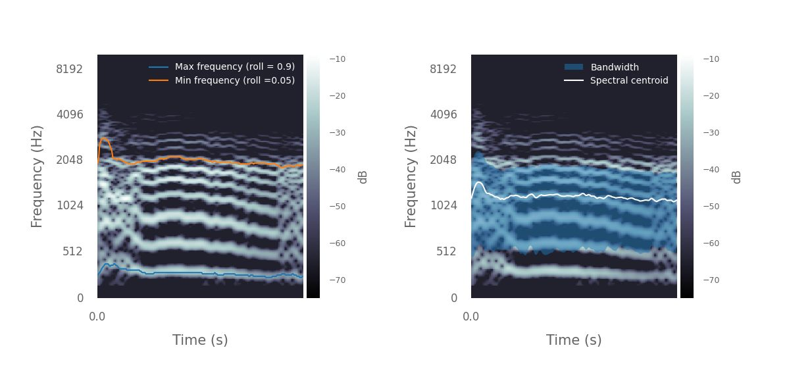

Acoustic feature extraction
Acoustic feature extraction#
Pykanto is designed to provide a platform that enables researchers to run and
any analyses that they might need with ease and in a reproducible way. The
precise nature of those analyses will vary greatly, so pykanto’s aim is not
to provide functions or methods to, for example, extract audio features—there
already are other, much better libraries for that.
These are some examples that show one way in which you can extract and store features from vocalisations in a dataset created with pykanto:
Show code cell content
from __future__ import annotations
from pathlib import Path
import pkg_resources
from pykanto.dataset import KantoData
from pykanto.parameters import Parameters
from pykanto.signal.analysis import (
approximate_minmax_frequency,
spec_centroid_bandwidth,
)
from pykanto.signal.segment import segment_files_parallel, ReadWav
from pykanto.utils.custom import (
chipper_units_to_json,
parse_sonic_visualiser_xml,
)
from pykanto.utils.io import get_unit_spectrograms, load_dataset
from pykanto.utils.paths import ProjDirs, get_file_paths, get_wavs_w_annotation
from pykanto.signal.spectrogram import retrieve_spectrogram
Show code cell content
# ──── SETTINGS ────────────────────────────────────────────────────────────────
DATASET_ID = "STORM-PETREL"
DATA_PATH = Path(pkg_resources.resource_filename("pykanto", "data"))
PROJECT = Path(DATA_PATH).parent
RAW_DATA = DATA_PATH / "raw" / DATASET_ID
DIRS = ProjDirs(PROJECT, RAW_DATA, DATASET_ID, mkdir=True)
Show code cell content
# ──── MAIN ────────────────────────────────────────────────────────────────────
# Creates and segments a dataset from raw data
wav_filepaths, xml_filepaths = [
get_file_paths(DIRS.RAW_DATA, [ext]) for ext in [".wav", ".xml"]
]
files_to_segment = get_wavs_w_annotation(wav_filepaths, xml_filepaths)
segment_files_parallel(
files_to_segment,
DIRS,
resample=22050,
parser_func=parse_sonic_visualiser_xml,
min_duration=0.1,
min_freqrange=100,
labels_to_ignore=["NOISE"],
verbose=False
)
chipper_units_to_json(DIRS.SEGMENTED, overwrite_json = True)
params = Parameters(
window_length=512,
hop_length=32,
n_fft=2048,
num_mel_bins=240,
sr=22050,
top_dB=65,
highcut=10000,
lowcut=0,
dereverb=False,
verbose=False,
)
dataset = KantoData(
DIRS,
parameters=params,
overwrite_dataset=True,
overwrite_data=False,
)
out_dir = DIRS.DATA / "datasets" / DATASET_ID / f"{DATASET_ID}.db"
dataset = load_dataset(out_dir, DIRS)
dataset.segment_into_units()
Found 2 files. They will be processed in 2 chunks of length 1.
2023-07-23 14:41:13,706 INFO worker.py:1519 -- Started a local Ray instance. View the dashboard at 127.0.0.1:8265
Function 'segment_files_parallel' took 4.6341 sec.
Function 'chipper_units_to_json' took 0.9239 sec.
UserWarning:
There is an unequal number of matching .wav and .json files in /home/nilomr/projects/pykanto/pykanto/data/segmented/storm-petrel. Keeping only those that match: dropped 11
Done
Using existing unit onset/offset information.
Found and segmented 527 units.
UserWarning:
The vocalisations in this dataset have already been segmented: will use existing segmentation information.If you want to do it again, you can overwrite the existing segmentation information by it by setting `overwrite=True`
We now have a dataset that contains multiple vocalisations. Let’s tell pykanto
that we want to look at individual notes, by setting song_level=False, and
then plot the spectrogram for a single vocalisation in the dataset.
# Tell pykanto to run the analysis at the unit, not song, level
dataset.parameters.update(song_level=False)
dataset.get_units()
# Choose a song to look at
ID = "STORM-PETREL"
key = str(dataset.data.index[9])
# Plot spectrogram of vocalisation, with note on/offsets
dataset.plot(key, title= 'Storm Petrel Purr Song', segmented=True)
Now that the data are ready, we can extract some features from the spectrograms. As an example, let’s estimate the minimum and maximum frequencies and the spectral centroid of each note over time using pykanto, and plot the results.
Here I have selected the final note of a male Storm Petrel’s ‘purring song’:
The purring sound is given in short bursts, separated by a strange little breath note, once famously likened to “a fairy being sick” (C Oldham in Lockley 1983). Purring is more often heard coming from the safety of a burrow, where the combined phrase of purring plus breath note is repeated monotonously, often for minutes on end.
%%capture
# Extract spectrograms of units and get the last note of the song
units = get_unit_spectrograms(dataset, ID)
breath_note = units[key][-1]
# This returns arrays of floats with a time series of min and max frequencies
minfreqs, maxfreqs = approximate_minmax_frequency(
dataset, spec=breath_note, plot=True, roll_percents=[0.9, 0.05]
)
# This returns a time series of spectral centroids and badwidths
centroid, bw = spec_centroid_bandwidth(dataset, spec=breath_note, plot=True)

from pykanto.signal.segment import ReadWav
from pykanto.signal.spectrogram import retrieve_spectrogram
key = dataset.data.index[0]
spec = retrieve_spectrogram(dataset.files.at[key, "spectrogram"])
wav_object = ReadWav(Path(dataset.files.at[key, "wav_file"]))
wavfile, audio_metadata = wav_object.get_wav(), wav_object.as_dict()
That’s just an example using wrappers around a couple of
[librosa](https://librosa.org/doc/latest/index.html) functions. In general, if
you need to access a spectrogram for further analysis, you can do so easily by
calling
spec = retrieve_spectrogram(dataset.files.at[key, "spectrogram"])
where key is the index of the vocalisation you want to access. If you need to
access the audio file itself, you can do it like so:
wav_object = ReadWav(Path(dataset.files.at[key, "wav_file"]))
wavfile, audio_metadata = wav_object.get_wav(), wav_object.as_dict()
or using your favourite library that can read wav files.